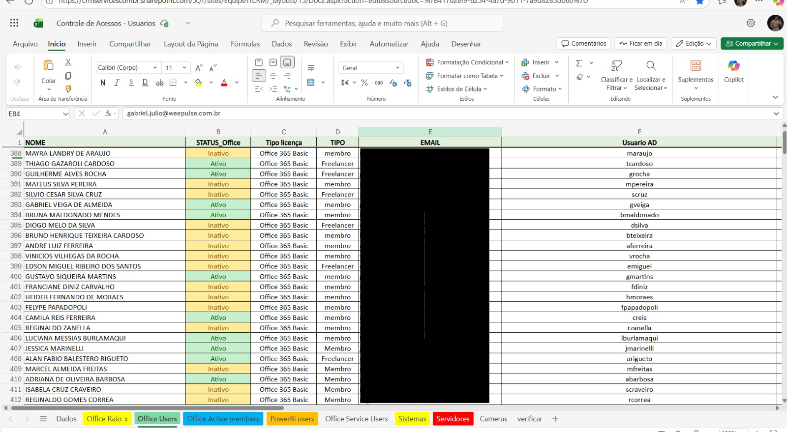

Monitoramento de Rede
Projeto de monitoramento de servidores e dispositivos usando Zabbix e Grafana.

Descrição: Simulação de configuração de monitoramento com alertas e dashboards visuais.
Ferramentas: Zabbix, Grafana, Linux
Objetivo: Mostrar habilidades em configuração e monitoramento de rede. Redução de 30% do tempo de resposta a incidentes graças aos alertas automáticos.
Habilidades Aplicadas: Configuração de triggers, criação de dashboards, monitoramento proativo.
Ver no GitHubGestão e Automação de Usuários

Print 1: Active Directory – organização de usuários e permissões (dados fictícios)
Print 2: Planilha Excel – controle de usuários e licenças (exemplo fictício)

Print 3: Planilha Excel – controle de notebooks e máquinas (exemplo fictício)
Descrição: Automatização e controle de usuários em AD, com suporte integrado via Excel e relatórios de inventário de máquinas.
Ferramentas: Active Directory, Excel, TOTVS RM
Objetivo: Demonstrar organização, automação de processos e monitoramento de usuários e equipamentos corporativos.
Habilidades Aplicadas: Criação e gerenciamento de usuários e grupos, controle de inventário via planilhas, análise de relatórios, integração de dados entre sistemas.
Ver no GitHub